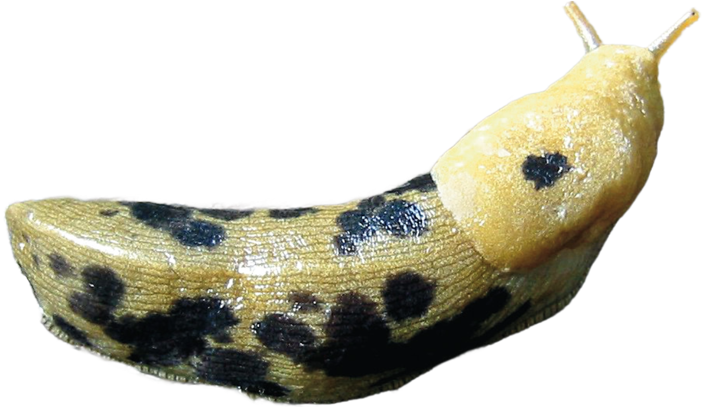

welcome to sunshine park! 
Neko
This website is currently not very accessible and is made for desktop. I might work on making this mobile-friendly.
Warning
This site contains:
- Autoplaying audio
- A "secret" page
- A cat in the corner who will follow your mouse around if you click on it (and stop following if you click again)
Things I'm working on
- Statuscafe does not load (perhaps because I am a new user? but it's been a while and still hasn't figured itself out yet soo)
- Some colors may look off, because I always have "night shift" turned on, so the colors I set are not true to other users.
- Add music from: https://webdeckplayer.neocities.org/ ?
- Deploy site with github: https://nenrikido.neocities.org/blog/post/deploy-site/
- Change selection color
- Adding a mini blog section to replace my dead blog
- Make a better image gallery to make a screenshot garden
This site was updated as of .